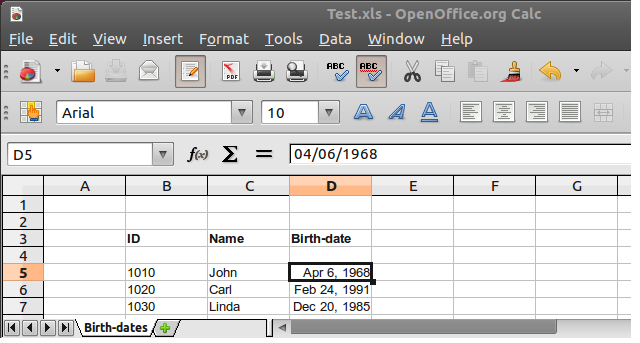

| Easy .. to Oracle | Technical overview | Comparison | Requirements | Features and futures |
| Usage | Screenshots | Licenses | Links | FAQ |
A source Excel file, opened in OpenOffice.Org

The Excel data in Oracle
The external table definition (note the preprocessor line)
Back to ETO Home.
Copyright 2011-2014 Ivo Herweijer